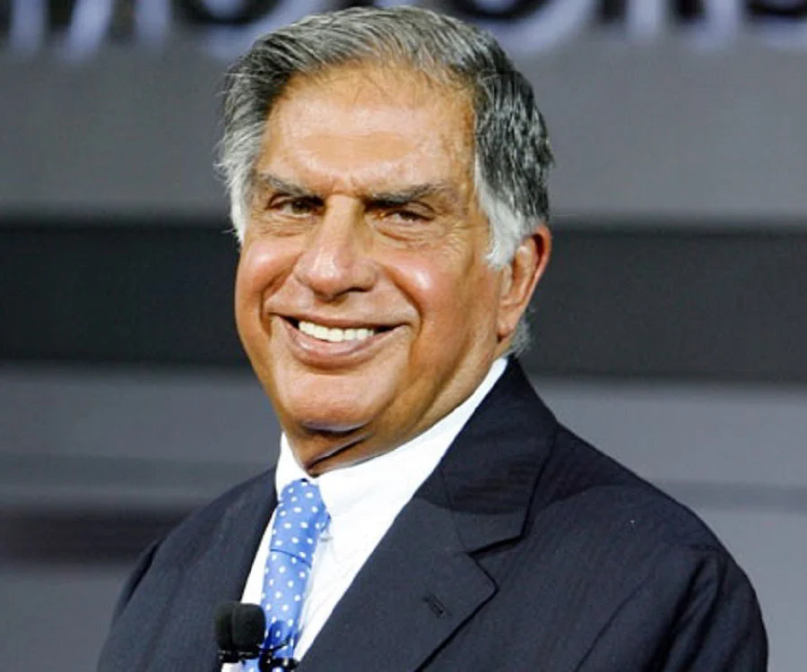

International growth
During his chairmanship, Tata companies made major international acquisitions, including Tetley and Jaguar Land Rover. These moves expanded the group’s global presence.
Ratan Tata was an Indian industrialist who led the Tata Group as chairman from 1991 to 2012. During his leadership, the group expanded internationally, while his public work also included a strong association with philanthropy and social development.

Portrait image: open ratan-tata-3.webp. Add the original photographer or publisher credit if known.
Use the arrows to move through the milestone deck. A full timeline is also listed below.
Ratan Tata joins the Tata Group and starts learning the business from within.
Open each card for more detail and a link to the company’s official website.
Showing all companies and ventures.
This map groups major businesses associated with the wider Tata Group. Ratan Tata led Tata Sons as chairman from 1991 to 2012; the map is simplified and is not an ownership chart.
His legacy is connected both to the Tata Group’s growth and to philanthropic work supporting communities.
During his chairmanship, Tata companies made major international acquisitions, including Tetley and Jaguar Land Rover. These moves expanded the group’s global presence.
Tata-linked philanthropic trusts have supported initiatives in areas such as health, education, livelihoods, and community development.